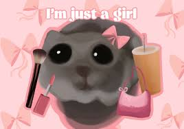

I have always dated men I feel like I need to fix, I'm practically Bob the Builder and really good at it. So, period.
CEO of Hating
I hate on everything and anyone I don't like on a daily basis because it does in fact make me feel better.
I should probably go to therapy for this but won't; hating is fun. I kind of feel like Kanye West sometimes.
CEO of Yapping
No background context or explanation needed, I'm a certified D1 yapper and I don't even need coffee or any type of stimulant to be like this; it's just me.
CEO of Being Blonde
Sometimes I really live up to my hair stereotype and have ditzy moments, but any time I do and it's in front of someone, I just say "Sorry, I'm blonde so you have to bear with me," and it usually gets me off the hook.
Skills
Singing Creed songs decently at dive bars during karaoke night while belligerently drunk.Borat impersonations.Quoting David Goggins.

Asking my boyfriend if he still loves me after I act crazy towards him for no reason.Getting my oldest brother's best friends to unintentionally fall in love with me.Being petty, especially during Monopoly or any card/board game.